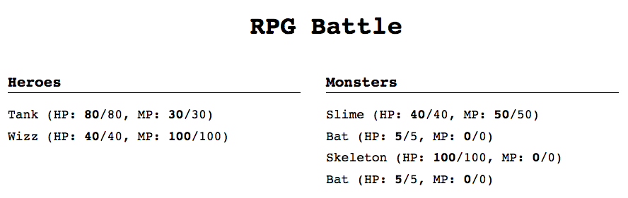
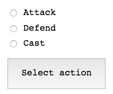

Guide
Note: read first the practice formulation before reading this document.
This is a step-by-step guide with suggestions toward approaching the practice. It is advisable to read this whole document, especially the Considerations section, before getting started on the first step.
It is also recommendable to have a fresh memory of the API from the previous practice on RPG battles with Node; review the practice formulation or its source code.
Should you get stuck wondering which API calls to make during the development of this practice, you can always check with the index.js file from the previous practice, where there is a programmed client of the aforementioned API.
1. Displaying the characters
In the starter HTML code, there are two lists <ul class="character-list"> which you have to fill with <li> elements, one per character. We need to indicate the character's name along with her hit and mana point attributes. Further on, it will be useful to be able to refer to that character, so it is best to store her character ID to an attribute.
<ul class="character-list">
<!-- ... -->
<li data-chara-id="bat 2">
bat (HP: <strong>5</strong>/5, MP: <strong>0</strong>/0)
</li>
</ul>
Although the <ul> lists are created in the HTML file, we still need to fill in their content, which is something we have to do dynamically with JavaScript. We can access the character views (CharactersView) of the characters in a party with Battle.prototype.characters.allFrom.
Since the contents of these lists will have to be updated, it is convenient to implement a function that will do this; then we will be able to call it from elsewhere.
For the time being, we can begin by displaying the characters at the start of every turn. To do this, we need to subscribe to the turn event from Battle.

Related documentation
Element.innerHTMLon the MDN.Document.querySelectoron the MDN
2. Displaying the selected character
The CSS is set up so that an element with the class active is highlighted, indicating it is that character's turn.
In the callback of the turn event from Battle, we get the info from every turn. One of the data points of the event is the active character's ID, with which we can use a querySelector in order to select that character's <li> and add the active class to her.

Related documentation
Element.classListon the MDN- Using data attributes (guide on the MDN)
3. Displaying the battle action menu
Within the section <section class="battle-menu"> we can find three forms, which are hidden from display thanks to the inline style display: none. Each form represents a "stage" of the battle menu, and presents a list of options to the player.
A list of the options that are available at any given time can be obtained with the list method of Battle.prototype.options. With this list, we can generate a series of radio buttons so that the player can choose her desired option.
This list of radio buttons will look like this, though it has to be dynamically generated with JavaScript:
<ul class="choices">
<li><label><input type="radio" name="option" value="attack"> attack</label></li>
<li><label><input type="radio" name="option" value="defend"> defend</label></li>
<li><label><input type="radio" name="option" value="cast"> cast</label></li>
</ul>
We have to generate this list dynamically within the actions to be taken whenever Battle fires the turn event. In this case, the list to be generated is that of the actions available to a character, which corresponds to the form which name atribute has the value select-action.

4. Selecting an action
Radio buttons have a peculiar behavior, since they share the name attribute. This is the way the browser "groups" them so that only a single radio button can be active at any given time.
The value of a radio button group can be easily accessed through the form they belong to. For instance, we have set a name for the "option" group in the battle menu. Provided that its form is stored in the form variable, we could have the following:
var action = form.elements['option'].value;
battle.options.select(action);
Obviously, this has to be done when the player has pressed the Select action button. To that end, we need to subscribe to the form's submit event. It is also indispensable to disable said event with preventDefault in order to prevent the browser from reloading the page.
We must also validate the form in order to ensure that the player has selected an option. HTML5 allows us to carry out simple client-side validations with JavaScript. To make a field mandatory, we need to add the required attribute to said element. In the case of a radio button group, all we need is to add required to any one of them:
<input type="radio" name="option" value="attack" required>
In order to check that this step has been correctly realized, you can subscribe to the info event of Battle and print out said event's data. The Defend action should work with what has been done up to now, since it needs no further steps.

Related documentation
- HTML Forms Guide, a list of articles and tutorials on HTML5 forms.
Event.preventDefaulton the MDN.HTMLFormControlsCollectionon the MDN (for info onHTMLFormElement.elements)
5. Selecting a target
This is done similarly to selecting an action: we need to dynamically generate the options list with JavaScript, as well as intercept this form's submit event and call battle.options.select with the player's selected target.
One extra bit in this form is a link that lets us cancel the current action. In order for it to work, we need to intercept said link's click event, use preventDefault to prevent the browser from doing anything, and call battle.options.cancel.
Of course, we need to control which menu is visible at any time. We can do this by changing their inline CSS style, through the display property:
actionForm.style.display = 'none'; // hides the actions form
targetForm.style.display = 'block'; // shows the targets form
To ensure that it works, try choosing to attack a target in the menus and checking the messages output by the info event of Battle on the console:

Since we are re-rendering all of the parties' characters on each turn (every time Battle fires the turn event), if the attack has been successful, we should be able to see how the target's hit points have decreased.
Related documentation
displayCSS property on the MDN
6. Selecting a spell
This is very similar to selecting an action or a target. Again, we need to dynamically generate the options list (in this case, available spells), and hide or show the appropriate menu as per the flow.
Spell selection happens after having selected the Cast option in the actions menu; once we have selected a spell we need to show the target selection form.
A particularity of this menu is that there may be no available options. In this case, we need to disable the form's button if the options list is empty (and otherwise enable it). To do this, we need to use the button's disabled property.

7. Info panel
We need to show the user information on the result of a given action: whether the attack was successful or not, how much damage it inflicted, etc.

There is a paragraph with the ID battle-info within the HTML file; you can modify its content in order to display these battle info messages.
We can obtain this battle info by subscribing to the info event of Battle, which will provide us with the data for which character took action, against whom, whether she did so successfully, etc.
For easier completion of the task, we have included a function called prettifyEffect, which returns a "pretty" string (instead of [Object object]) with the effects applied in the attack.
var effectsTxt = prettifyEffect(effect || {});
// ej: -> '-5 hp, +5 mp'
8. Marking characters as dead
Now that the characters can attack, we can show when one of them has died. The CSS style sheet includes a dead class which, once applied to an element, marks it as "dead" (in this case, by changing its typeface to strikethrough).

To this end, we need to modify the code programmed in step 1 to display the characters, so that every element of the list (<li>) has the dead class if the character is dead (i.e., its hit points are equal to zero).
9. Endgame
We need to show a message in the info panel to indicate when the game is over, and who has won. Additionally, we need to show the characters again to display the end result of the battle (with all of the characters in one of the parties dead).
The game is over when Battle fires the end event, so we need to implement this code in a callback for this event.

Considerations
Template strings
Template strings (or template literals) are a feature of ES6, but one that is already implemented in most modern browsers. They can be useful for this practice, since they support expression interpolation y multiline declarations.
In their easiest form, they are defined the same way as a normal string, but using backticks `:
`Hello, world!`
We can have multiline strings without any need for breaking the string up, or using the concatenation operator:
`Hello,
world!`
In order to interpolate expressions, we have to place the expression we want to interpolate between the characters ${}:
var name = 'Darth Vader';
`Hello, ${name}`;
Not only can we use variables, but other types of expressions:
`Hello, ${name.toUpperCase()}, here's a calculation: ${2 + 2}`
Also, remember that the ternary operator is an expression too, and allows us to interpolate simple conditions:
`Hello, you are ${life > 0 ? 'alive' : 'dead'}`;
A practical example showing the difference between using template strings and normal strings in order to generate HTML code to be used within the innerHTML property:
var list = document.querySelector('ul.shopping-list');
var data = {name: 'Banana', amount: 3, price: 0.5};
// template strings
list.innerHTML += `<li class="${data.amount > 0 ? 'bought' : ''}">
${data.name}, ${data.amount * data.price}€
</li>`;
// regular strings
list.innerHTML += '<li class="' + (data.amount > 0 ? 'bought' : '') + '">' +
data.name + ', ' + data.amount * data.price + '€' +
'</li>';
Documentation: Template strings on the MDN.
Data attributes
Repeated character IDs have a blank space (e.g., bat 2). If we want to use this in a querySelector, we need to use double quotes:
document.querySelector('[data-chara-id="bat 2"]');
In order to use that data attribute by using the dataset property, we need to keep in mind that dashes transform into camel case. Thus, if used as the data-chara-id data attribute, we would access it as follows:
var el = document.querySelector([data-chara-id="bat 2"]);
console.log(el.dataset.charaId); // imprimiría bat 2
Documentation: Using data attributes on the MDN.